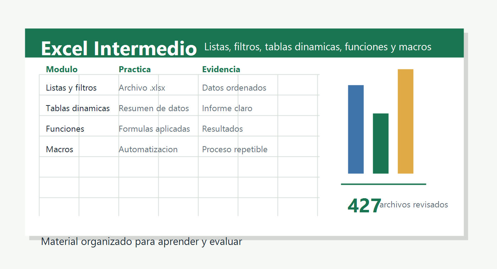

01
Listas, ordenacion y filtros
Preparar datos limpios, ordenar registros y aplicar filtros automaticos y avanzados.
ListasFiltrosSubtotales
Presentacion para estudiantes
Una guia visual para recorrer el material de la carpeta, practicar con planillas, interpretar documentos de apoyo y entregar evidencias claras.

Usar Excel como herramienta de analisis y presentacion de informacion, desde la organizacion de datos hasta la automatizacion basica con macros.
Cada modulo combina lectura, demostracion y practica. La meta es que el estudiante produzca un archivo verificable, no solo que mire el procedimiento.
Preparar datos limpios, ordenar registros y aplicar filtros automaticos y avanzados.
Resumir informacion, comparar categorias y presentar conclusiones con tablas de analisis.
Construir resultados confiables usando funciones, referencias y argumentos correctamente.
Reconocer cuando una tarea repetitiva puede automatizarse y documentar el proceso.
Las actividades estan pensadas para resolverlas con los archivos de trabajo y entregar evidencias breves.
Abrir una planilla, identificar columnas clave, ordenar registros y explicar que informacion se puede analizar.
Usar filtros para responder una pregunta concreta y guardar una copia con el resultado visible.
Crear un resumen por categoria, revisar totales y redactar una conclusion de dos lineas.
Aplicar formulas o funciones de busqueda, validar resultados y marcar errores encontrados.
Interpretar la estructura de liquidacion, revisar datos de entrada y diferenciar calculos de resultados.
Explicar que hace una macro antes de habilitarla y registrar que tarea automatiza.
La evaluacion prioriza comprension, orden, evidencia y uso responsable de archivos con macros o ejecutables.
| Criterio | Evidencia esperada | Puntaje |
|---|---|---|
| Organizacion de datos | Tabla limpia, encabezados claros, filtros aplicados y archivo guardado correctamente. | 25% |
| Analisis | Tabla dinamica, subtotales o funciones que respondan una pregunta de negocio o clase. | 30% |
| Presentacion | Resultados legibles, formato consistente y breve interpretacion del resultado. | 20% |
| Autonomia | Uso correcto de guias, videos y archivos de apoyo sin perder trazabilidad del trabajo. | 15% |
| Seguridad | Reconocimiento de macros, ejecutables y archivos temporales antes de abrir o habilitar contenido. | 10% |
La carpeta tiene material academico valioso y tambien archivos tecnicos que conviene mantener separados.
Los archivos con extension .exe, .cmd, .reg, .dll, .sys y algunas planillas .xlsm deben revisarse con cuidado. Para clase, prioriza PDFs, presentaciones, videos y planillas de practica. Mantener instaladores o activadores fuera de la carpeta academica ayuda a evitar confusiones.